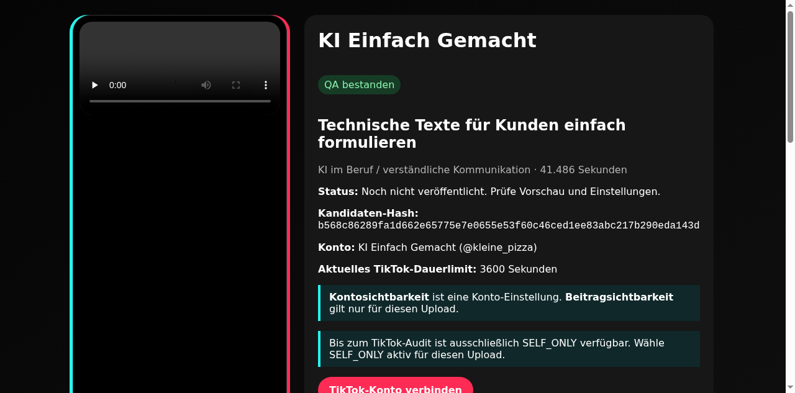
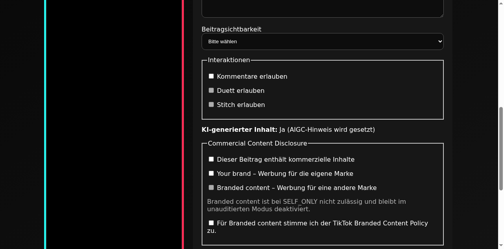

Lokaler Arbeitsablauf
Skripte, Medien und Videoentwürfe werden am lokalen Creator-Arbeitsplatz verarbeitet. Diese öffentliche Website nimmt keine Projekte, Videos oder TikTok-Zugangsdaten entgegen.
Lokale Creator-Software · begrenzte Pilotphase
„KI Einfach Gemacht“ ist eine lokal installierbare Desktop-Anwendung für deutschsprachige Creator. Sie bündelt die Vorbereitung KI-gestützter Kurzvideos und einen kontrollierten TikTok-Veröffentlichungsablauf an einem Creator-Arbeitsplatz.
Aktueller Status: Die Anwendung befindet sich in einer begrenzten Pilotphase. Sie ist kein allgemein verfügbarer Cloud-Dienst und bietet keine Mehrnutzerfähigkeit oder öffentliche Registrierung.
Für wen?
Die Desktop-Anwendung richtet sich an einzelne Creator, die Entwürfe lokal vorbereiten, Ausgabe und Metadaten kontrollieren und erst danach selbst über eine TikTok-Übertragung entscheiden möchten. Sie ersetzt weder redaktionelle Prüfung noch die Verantwortung für Rechte, Kennzeichnung und Plattformregeln.
Funktionen
Skripte, Medien und Videoentwürfe werden am lokalen Creator-Arbeitsplatz verarbeitet. Diese öffentliche Website nimmt keine Projekte, Videos oder TikTok-Zugangsdaten entgegen.
Video, Beschreibung, Sichtbarkeit und verfügbare Veröffentlichungsoptionen werden vor der Übertragung angezeigt. Ohne ausdrückliche Freigabe startet kein Upload.
Die Verbindung erfolgt durch Anmeldung und Autorisierung bei TikTok. Die Anwendung nutzt nur die vom verbundenen Konto erteilten Berechtigungen für den bestätigten Posting-Ablauf.
KI-generierte oder wesentlich KI-bearbeitete Inhalte müssen vor der Veröffentlichung als solche geprüft und – soweit erforderlich – mit den vorgesehenen AIGC-Hinweisen gekennzeichnet werden.
So funktioniert es
Kontrolle & Daten
Die Pilotanwendung ist für einen einzelnen lokalen Creator-Arbeitsplatz ausgelegt. Eine TikTok-Autorisierung gilt nur für das dabei ausdrücklich verbundene Konto; sie gewährt keinen automatischen Zugriff auf weitere TikTok-Konten. Für einen Kontowechsel wird die bestehende Verbindung getrennt und das andere Konto neu autorisiert.
Die lokale Verbindung und gespeicherte Zugangstoken können in der Anwendung entfernt werden. Zusätzlich kann der Zugriff in den TikTok-Kontoeinstellungen widerrufen werden. Hinweise für Supportanfragen und Datenlöschung stehen auf der Support-Seite.
Tatsächliche Anwendung
Die folgenden Aufnahmen stammen aus der realen lokalen Desktop-Anwendung und zeigen den QA-geprüften Kandidaten unmittelbar vor dem SELF_ONLY-Testupload. Der Upload wurde anschließend nur nach ausdrücklicher Einzelzustimmung ausgeführt und mit PUBLISH_COMPLETE bestätigt.


Details zur lokalen Verarbeitung, TikTok-Anbindung, Aufbewahrung und zu den Verantwortlichkeiten stehen in der Datenschutzerklärung und den Nutzungsbedingungen. Beide Dokumente sind vor einer Pilotnutzung einsehbar.